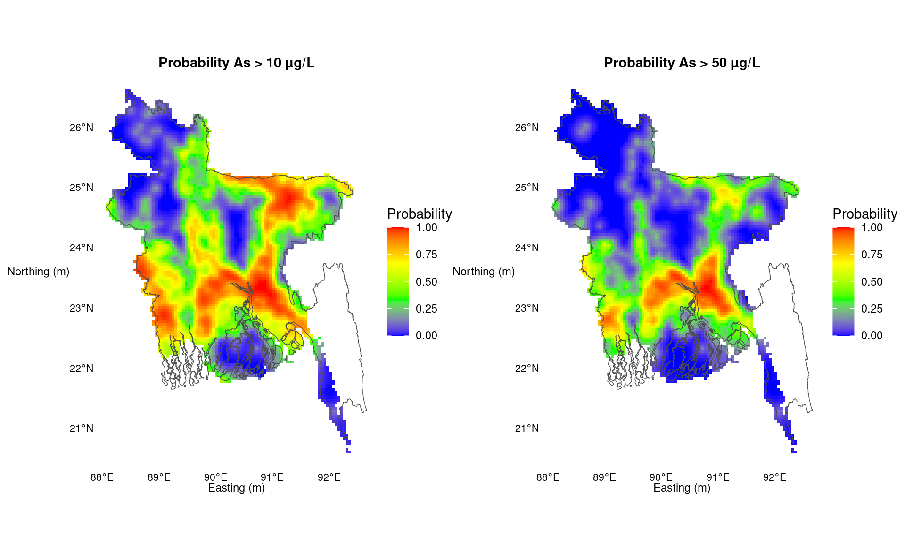
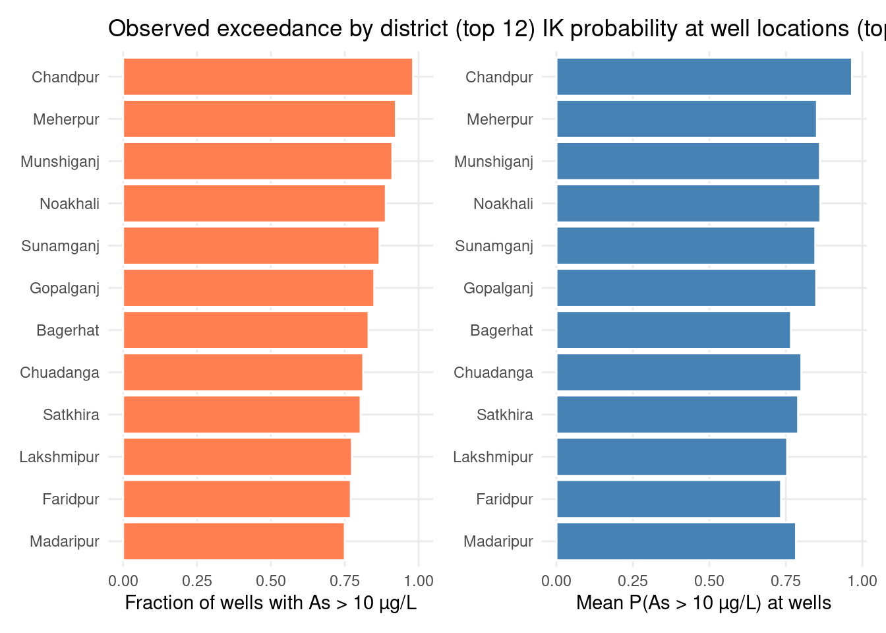

Learning objectives - Understand indicator kriging (IK) as a non-parametric method for probabilistic risk mapping - Prepare BGS groundwater arsenic data, including detection-limit censoring - Transform continuous concentrations into binary exceedance indicators (WHO & Bangladesh thresholds) - Compute, model, and visualise indicator semivariograms with gstat - Validate IK predictions with k-fold cross-validation - Map the probability of exceeding regulatory arsenic limits on a national grid - Interpret IK surfaces for environmental health decision-making
Data:Data/bgs_geochemical.csv, Data/bd_grid.csv, Data/BD_Banladesh_BUTM.shp (+ sidecar files) Context: British Geological Survey (BGS) groundwater survey, 3,534 boreholes across 61 of 64 districts Thresholds: 10 µg/L (WHO) and 50 µg/L (Bangladesh national standard) Estimated time: 3 hours | Level: Advanced Libraries:sf, sp, gstat, ggplot2, dplyr, patchwork
2. Indicator Kriging for Environmental Health Risk
Indicator kriging (IK) is a non-parametric geostatistical method. After an indicator transformation of a continuous variable at one or more pre-defined thresholds, ordinary kriging of the 0/1 indicators maps the probability of exceeding those thresholds. That probability surface is directly useful for regulatory and public-health decisions.
IK can also reconstruct an entire cumulative distribution function (CDF) at unsampled locations. The mean of that CDF (the E-type estimate) is then an estimate of concentration after the upper and lower tails have been modelled (Goovaerts, 2009). CDF-based IK is attractive when the raw distribution is strongly skewed: log-transforms and other parametric estimators are easily dominated by extreme values.
In R, gstat implements indicator kriging of binary fields. There is still no CRAN package that builds E-type estimates from IK CDFs. That step is available in classical geostatistical software such as GSLIB and SGeMS. AUTO-IK(Goovaerts, 2009) automates GSLIB routines for threshold selection, indicator variogram modelling, prediction of probability distributions on regular or irregular grids, and estimation of the mean and variance of those distributions.
Ordinary kriging is the best linear unbiased predictor (BLUP) of a spatially distributed variable. At an unsampled location \(\mathbf{s}_0\):
Map P(As > 50 µg/L) against the Bangladesh drinking-water standard
Skewed distributions
Arsenic is strongly right-skewed; log-transforms distort tail behaviour
Censored data
Detection-limit samples can be handled before indicator coding
This notebook follows the classic BGS Bangladesh arsenic workflow:
Convert arsenic concentrations to indicators at 10 and 50 µg/L
Compute and model indicator semivariograms
Predict exceedance probabilities by indicator kriging
Map those probabilities on a national prediction grid
3. Load Data
We use the British Geological Survey groundwater arsenic survey: hydrochemical data from 3,534 boreholes in 61 of 64 districts. Prediction locations are the national 5 km grid (bd_grid.csv); the country outline is the BUTM shapefile.
Min. 1st Qu. Median Mean 3rd Qu. Max.
0.25 0.25 3.90 55.17 49.98 1660.00
3.1 Handle detection limits
About 27.7% of sampled wells had arsenic below the instrumental detection limit of 0.5 µg/L (hydride generation–atomic fluorescence spectrometry) and 2.5% below 6.0 µg/L (hydride generation–ICP-AES). Following the BGS protocol, values below a detection limit are assigned half the equipment detection limit (0.25 or 3.0 µg/L). Many records in this file are already stored at those half-DL values; remaining readings reported exactly at 0.5 or 6.0 µg/L are converted here.
cat(sprintf("Values at half-DL 0.25 µg/L after substitution: %s (%.1f%%)\n",format(n_half_afs, big.mark =","), 100* n_half_afs /nrow(df)))
Values at half-DL 0.25 µg/L after substitution: 1,027 (29.1%)
cat(sprintf("Values at half-DL 3.0 µg/L after substitution: %s\n",format(n_half_icp, big.mark =",")))
Values at half-DL 3.0 µg/L after substitution: 15
print(summary(df$As_ppb))
Min. 1st Qu. Median Mean 3rd Qu. Max.
0.25 0.25 3.80 55.17 49.98 1660.00
Censoring at 0.25 or 3.0 µg/L does not change WHO (10) or Bangladesh (50) indicators, but it is the correct protocol before any later E-type / multi-threshold analysis.
4. Exploratory Data Analysis
Arsenic is strongly right-skewed, which is exactly the setting where indicator coding is more robust than kriging the raw (or log) concentrations.
p_hist <-ggplot(df, aes(As_ppb)) +geom_histogram(bins =20, fill ="steelblue", colour ="white") +geom_vline(xintercept =unname(THRESHOLDS), colour ="#DC2626", linetype ="dashed") +labs(x ="As (µg/L)", y ="Count", title ="Histogram of groundwater As")p_qq <-ggplot(df, aes(sample = As_ppb)) +stat_qq(colour ="steelblue", size =0.8, alpha =0.6) +stat_qq_line(colour ="steelblue", linewidth =0.8) +labs(x ="Theoretical quantiles", y ="Sample quantiles",title ="Normal Q–Q plot of As")print(p_hist | p_qq)
Samples exceeding WHO standard (10 µg/L): 42.1%
Samples exceeding Bangladesh standard (50 µg/L): 24.9%
5. Project Sample Locations to BUTM
Sampling coordinates are stored as longitude/latitude (WGS 84). We reproject boreholes to Bangladesh Universal Transverse Mercator (BUTM) — the same projected CRS as the national boundary — so Euclidean distances in metres are meaningful for the semivariogram.
An indicator for a continuous variable is 1 if the value exceeds a defined threshold, 0 otherwise. We use the two regulatory cut-offs from the original BGS IK exercise:
An indicator variogram applies the same formula to \(I(\mathbf{s}; z_c)\). It describes the spatial continuity of high-risk vs low-risk zones rather than of concentration itself.
gstat cannot krige coincident locations, so we drop zero-distance pairs with zerodist() (the original IK workflow). Initial exponential parameters are set by eye, then refined by weighted least squares — the same vgm() / fit.variogram() sequence as the source notebook.
# Coincident boreholes: keep the first of each zerodist pairik_sp <-as(ik_sf, "Spatial")zd <-zerodist(ik_sp)n_coinc <-if (is.null(nrow(zd))) 0elsenrow(zd)if (n_coinc >0) { ik_sp <- ik_sp[-zd[, 1], ]}ik_sf <-st_as_sf(ik_sp)mf <-st_drop_geometry(ik_sf)cat(sprintf("Unique sample locations after zerodist(): %s (dropped %d coincident points)\n",format(nrow(ik_sf), big.mark =","), n_coinc))
Unique sample locations after zerodist(): 3,420 (dropped 115 coincident points)
# Experimental indicator variograms (gstat defaults: cutoff ≈ 1/3 bounding-box diagonal)v10 <-variogram(ik_10 ~1, data = ik_sf)v50 <-variogram(ik_50 ~1, data = ik_sf)# Initial exponential model set by eye, then WLS fitm10 <-vgm(psill =0.15, model ="Exp", range =40000, nugget =0.05)m50 <-vgm(psill =0.15, model ="Exp", range =40000, nugget =0.05)m_f_10 <-fit.variogram(v10, m10)m_f_50 <-fit.variogram(v50, m50)cat("Fitted indicator variogram As > 10 µg/L:\n")
Fitted indicator variogram As > 10 µg/L:
print(m_f_10)
model psill range
1 Nug 0.1346799 0.00
2 Exp 0.1155823 46860.32
cat("\nFitted indicator variogram As > 50 µg/L:\n")
Fitted indicator variogram As > 50 µg/L:
print(m_f_50)
model psill range
1 Nug 0.1005604 0.00
2 Exp 0.1030162 56236.76
We run 5-fold cross-validation (gstat::krige.cv(..., nfold = 5)), the same procedure as in the original IK notebook (described there as leave-one-out in spirit: hold out a fold, predict P(indicator = 1) from the remaining points, compare with the observed 0/1). Predicted probabilities are then clipped to \([0, 1]\) — kriging of indicators is not guaranteed to stay inside that interval.
var1.pred var1.var observed residual
Min. :0.0000 Min. :0.1449 Min. :0.0000 Min. :-0.9950299
1st Qu.:0.1280 1st Qu.:0.1550 1st Qu.:0.0000 1st Qu.:-0.2474077
Median :0.3954 Median :0.1572 Median :0.0000 Median :-0.0215171
Mean :0.4227 Mean :0.1578 Mean :0.4216 Mean :-0.0009756
3rd Qu.:0.6876 3rd Qu.:0.1597 3rd Qu.:1.0000 3rd Qu.: 0.2435354
Max. :1.0000 Max. :0.2112 Max. :1.0000 Max. : 1.0025479
zscore fold geometry
Min. :-2.508652 Min. :1.00 POINT :3420
1st Qu.:-0.620463 1st Qu.:2.00 epsg:NA : 0
Median :-0.054180 Median :3.00 +proj=tmer...: 0
Mean :-0.002278 Mean :3.01
3rd Qu.: 0.615455 3rd Qu.:4.00
Max. : 2.537233 Max. :5.00
cat("\nCV As > 50 µg/L:\n")
CV As > 50 µg/L:
print(summary(cv_50))
var1.pred var1.var observed residual
Min. :0.00000 Min. :0.1083 Min. :0.000 Min. :-0.9928603
1st Qu.:0.02507 1st Qu.:0.1157 1st Qu.:0.000 1st Qu.:-0.1588994
Median :0.14437 Median :0.1173 Median :0.000 Median :-0.0255594
Mean :0.25325 Mean :0.1178 Mean :0.252 Mean :-0.0008994
3rd Qu.:0.40135 3rd Qu.:0.1193 3rd Qu.:1.000 3rd Qu.: 0.0109059
Max. :1.00000 Max. :0.1621 Max. :1.000 Max. : 1.0070914
zscore fold geometry
Min. :-2.90646 Min. :1.000 POINT :3420
1st Qu.:-0.46499 1st Qu.:2.000 epsg:NA : 0
Median :-0.07445 Median :3.000 +proj=tmer...: 0
Mean :-0.00247 Mean :2.982
3rd Qu.: 0.03156 3rd Qu.:4.000
Max. : 2.98161 Max. :5.000
Ordinary IK at each grid cell, using the 50 nearest neighbours (nmax = 50) and the fitted exponential models — matching the original gstat::krige() call.
Min. 1st Qu. Median Mean 3rd Qu. Max.
0.00000 0.09777 0.36867 0.40764 0.68404 1.00000
cat("\nClipped P(As > 50 µg/L):\n")
Clipped P(As > 50 µg/L):
print(summary(grid_out$p_as_gt_50))
Min. 1st Qu. Median Mean 3rd Qu. Max.
0.00000 0.01455 0.12956 0.23748 0.37843 1.00000
11. Probability Maps
The original workflow converted the kriging output to a raster (rasterFromXYZ) and plotted it with rasterVis::levelplot() using a blue–green–yellow–red ramp. We build the same surface with geom_tile on the 5 km grid.
probability_surface <-function(grid_df, value_col, title) {ggplot() +geom_tile(data = grid_df,aes(x, y, fill = .data[[value_col]]),width =5000, height =5000 ) +geom_sf(data = bd, fill =NA, colour ="grey30", linewidth =0.25) +scale_fill_gradientn(name ="Probability",colours = ik_colours,limits =c(0, 1) ) +labs(title = title, x ="Easting (m)", y ="Northing (m)") +coord_sf() +theme_map() +theme(axis.title =element_text(size =9),axis.text =element_text(size =8),legend.position ="right" )}print(probability_surface(grid_out, "p_as_gt_10", "Probability As > 10 µg/L") |probability_surface(grid_out, "p_as_gt_50", "Probability As > 50 µg/L"))

12. District-Level Risk Summary
The original IK notebook stopped at the national probability maps. For health-policy use we summarise, by BGS DISTRICT, the fraction of sampled wells exceeding each threshold and the mean IK probability at those well locations (nearest grid cell).
top <- district_risk %>%slice_head(n =12) %>%mutate(DISTRICT =fct_reorder(DISTRICT, frac_gt_10))p_d1 <-ggplot(top, aes(frac_gt_10, DISTRICT)) +geom_col(fill ="coral", colour ="white") +coord_cartesian(xlim =c(0, 1)) +labs(x ="Fraction of wells with As > 10 µg/L",y =NULL, title ="Observed exceedance by district (top 12)")p_d2 <-ggplot(top, aes(mean_p_gt_10, DISTRICT)) +geom_col(fill ="steelblue", colour ="white") +labs(x ="Mean P(As > 10 µg/L) at wells",y =NULL, title ="IK probability at well locations (top 12)")print(p_d1 | p_d2)

13. Interpretation & Health Policy Context
Key findings from indicator kriging:
IK maps where groundwater is likely unsafe, not only where boreholes were drilled — essential because sample density is uneven.
The 10 µg/L (WHO) surface is more extensive than the 50 µg/L (Bangladesh) surface, as expected from the stricter guideline.
Ordinary kriging of indicators can produce probabilities slightly outside \([0, 1]\); clipping after prediction is standard.
Cross-validation Brier scores summarise calibration; lower is better.
gstat delivers the probability maps; E-type concentration estimates would require multiple thresholds and CDF reconstruction (AUTO-IK / GSLIB / SGeMS).
Limitations:
IK assumes stationarity of the indicator semivariogram.
Half-DL substitution (0.25 / 3.0 µg/L) does not affect the 10 and 50 µg/L indicators, but it would matter for a full IK CDF.
A single exponential model is a simplification; nested structures or anisotropy can be added if the empirical variogram warrants it.
References:
Goovaerts P. (2009). AUTO-IK: a geostatistical program for indicator kriging. Environ Sci Technol.
Why is indicator kriging preferred over ordinary kriging of log-arsenic when the goal is a regulatory exceedance map?
What does a predicted probability of 0.7 at an unmonitored grid cell mean for a household relying on a local tube well?
Why does gstat require zerodist() (or equivalent) before kriging, and what would happen if coincident points were left in?
The original notebook used an exponential model with vgm(0.15, "Exp", 40000, 0.05) as a starting guess. How would you check whether that model is adequate for the 50 µg/L indicator?
If the government wanted to prioritise well testing, how would you use the P(As > 50 µg/L) map together with the district table to rank districts?
Extend the analysis: add a third threshold (e.g. 200 µg/L) and compare the spatial pattern of severe poisoning risk. What extra step would AUTO-IK take that this notebook does not?
Next → Module 08: Reproducible Research & Deployment